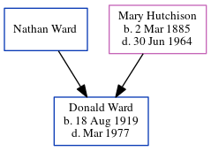

Donald S Ward 1919 - 1977
[ Home ] | [ Calendar ] | [ Surnames Index ] | [ Census Index ] | [ Family History ]The 2nd of 4 children of Nathan Ward and Mary Hutchison, Donald Ward, the fifth cousin on the father's side of Nigel Horne, was born on Aug 18, 19191,2. On Apr 1, 1940, he was living in South International Falls, Koochiching, Minnesota, USA2.
He died in Mar 1977 in Minnesota1.
Parents
- Mary Jane was born on Mar 2, 1885
Citations
- Social Security Death Index - Findmypast
- US Census 1940 - Findmypast (was age 21 and the son of the head of the household)
Media
Social Security Death Index - USBMD/SSDI/473071007
Family Tree
Generated by ged2site. Last updated on Jun 11, 2024